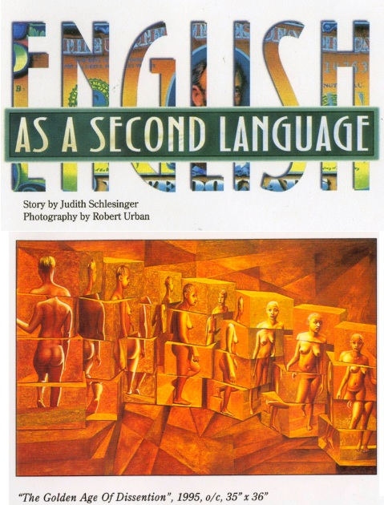
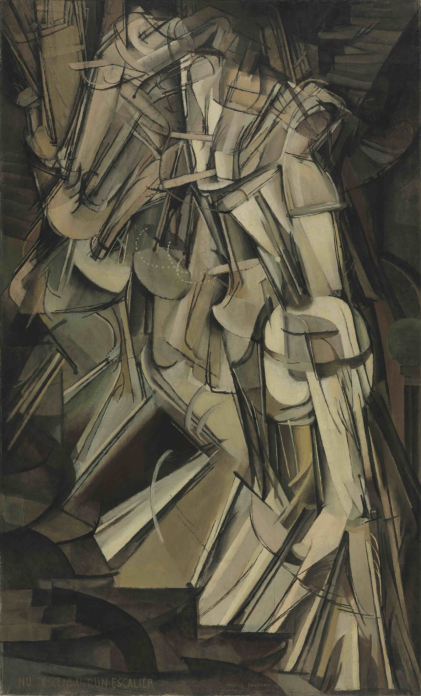

Literature
Judith Schlesinger, “English as a Second Language,” Topia, Spring 1997, p. 13.
Ron English, Popaganda: The Art & Subversion of Ron English (San Francisco: Last Gasp, 2001), p. 115. ISBN 1-887128-60-3.

Ron English, Abject Expressionism: The Art of Ron English (San Francisco: Last Gasp, 2007), p. 144. ISBN 978-0867196894.

Provenance
Private collection.
Notes
In Popaganda, this work was erroneously reported as 35 × 36 inches; in Abject Expressionism, it was listed as 35 × 46 inches.
This work references Marcel Duchamp’s Nude Descending a Staircase, No. 2.
Ancillary Documentation
The following materials document archival and reference material associated with the work.



